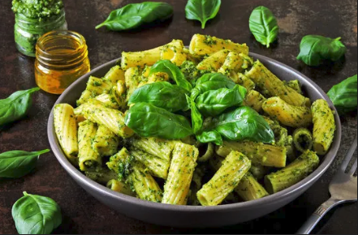

Home Page
Pesto

Description
My favourite way of serving pasta
With green basil or red tomato and pepper pesto and sprinkled with motzarella chese
Ingredients
- 300g noodles of ypur choice
- 1/2 of pesto jar (green or red, its up to you)
- motzarella chese
- Basil leafs
Directions
- boil your noodles till aldente
- pour 30ml of noodle water in to the cup and save for later
- take your noodles out and put them in to the empty pot
- put 1/2 of pesto jar in to the noodles and pour in the noodle water
- stir untill all noodles are covered with pesto
- put your noodles on plate, sprinkle with chese and garnish with basil leafs
- Enjoy